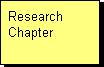
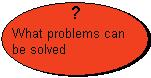
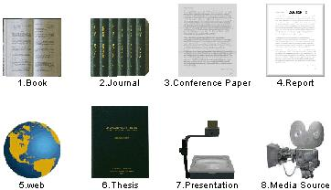
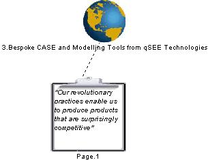
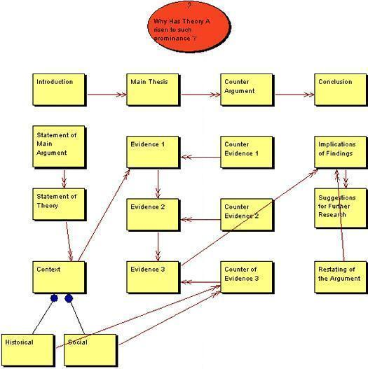
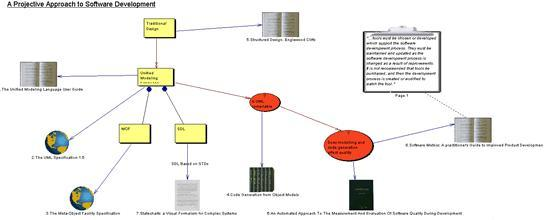

|
Citation
Manager
This page contains help information and examples of how to use
the citation manager tool. The citation manager is a very flexible
tool and can be used to aid in development of written work in a
number of ways. The modeling elements may be used to help organize
the work at a conceptual level (by identification of topics and
sub-topics) or at an alternative view point level (by identifying
questions that can help map arguments and opinions). The open nature
of the tool means that it is the user that makes the decision on
what type of modeling best supports their needs. Topics may be modeled
into hierarchical type structures and associated with other topics,
questions or information sources via graphical relationships.
To view the main multi-CASE help page click here
|
|
|
|
Constructing a Model
The citation manager tool is designed to allow several approaches to be used
when constructing a model. The particular approach taken is dependent upon the
modeler and how they make use of the key graphical elements. When producing
written documents it is common to divide the work up into several topic
areas. Each topic area may be related to other topic areas or divided into sub-topics.
Also, the underlying thought process involved in the production of a document
typically requires the identification of questions that
need to be answered or considered. This tool provides direct representation
of topics and questions, allowing
them to be graphically mapped and related.
One of the most important concepts involved in the generation of dissertations
and reports etc. is the references made to existing work. The citation manager
tool allows existing work to be graphically represented and related to the topics
and/or questions defined within the model. Various kinds of information
sources may be added to the model with each storing appropriate underlying
information such as the title, author(s), date, publisher
etc. The fact that this information is stored within the model allows for the
automatic generation of reference
lists and bibliographies. Graphical links may be shown between the topics, questions
and information sources. The purpose of these links is to show that there is
some type of relationship between the elements. The exact meaning of this relationship
is user defined and may be clarified by the use of a textual name label associated
with each link.
Every diagram object can have an associated textual annotation. The option
to edit the annotation can be found by right clicking any object. Annotations
can be useful to store your own thoughts or to rewrite something using your
personal dialect or interpretation.
The provided examples present alternative ways of using
the citation manager tool.

Topics
Definition: A topic element is used to identify an area of interest
within a model. A topic element can be representative of anything that is seen
to be important within the context of the written work being developed. A topic
element may represent a chapter, a sub-section or even part of an argument.
A topic should be given a name that is clear and concise A topic may be related
via a graphical link to other topics, questions and
information sources. A topic may also contain sub-topics,
which may be used to divide a topic into its constituent parts.
Representation: A topic is represented by a rectangular shaped node
containing the name of the topic. e.g.


Creation: A topic is added by right clicking on the citation model diagram
editor or on the model icon within the project tree and selecting the "Add
Topic" option from the menu. Position the topic outline where you wish
it to be placed on the diagram and left click, enter the name when prompted
and click "OK".
Rules: A topic should always have a name specified.
Operations: Move Forwards/Backwards, Bring to Front, Send to Back, Delete,
Add Sub-Topic, Add Link, Attach to Parent Topic, Detach from Parent Topic, Change
Topic Color, Change Text Color and Edit Topic Annotation/Name.
Back To Top
Questions
Definition: A question element is used to represent a query that needs
to be answered or considered in order to further the development of the written
work. A question element can help the modeler identify key questions that need
to be resolved or answered, possibly with the aid of referenced material. A
question should be given a name in the form of a question rather than a statement.
A question may be related via a graphical link to other questions, topics
and information sources. A question may also contain sub-questions,
which may be used to divide a question into its constituent parts.
Representation: A question is represented by an elliptical shaped node
containing a question mark and the question text. e.g.

Creation: A question is added by right clicking on the citation model
diagram editor or on the model icon within the project tree and selecting the
"Add Question" option from the menu. Position the question outline
where you wish it to be placed on the diagram and left click, enter the question
text when prompted and click "OK".
Rules: A question should always have a name specified in the form of
a question.
Operations: Move Forwards/Backwards, Bring to Front, Send to Back, Delete,
Add Sub-Question, Add Link, Attach to Parent Question, Detach from Parent Question,
Change Question Color, Change Text Color and Edit Question Annotation/Name.
Back To Top
Information Sources
Definition: An information source is used to graphically model a published
work that is to be referenced or related to either topics
or questions. There are various types of information
sources supported, each having its own particular set of parameters that need
to be specified. It is the data stored about each information source that is
used to automatically generate
the reference list and/or bibliography from a model. An information source may
contain one or more related quotes. These may be used to
show particular quotes of interest that originate from within the information
source. An information source may be related via a graphical link to other information
sources, topics and questions.
There are currently eight distinct types of information source that may be
included in a citation model. These are -
- Book
- Journal (represented by the collection of journals pictured side on)
- Conference Paper
- Report
- Web (represented by a globe)
- Thesis
- Presentation/Lecture (represented by an overhead projector)
- Media (represented by a camera). This includes video, motion pictures,
radio transmission, cassette recording and CD recording.
Representation: Information sources within the citation model are represented
by an appropriate graphical image, i.e. one of -

A related quote is shown using a clipboard style image
containing the quote text. When a related quote is created (by right clicking
on the information source and selecting the "Add Related Quote" option)
a dotted link is automatically created and attached between the quote and the
information source.

Creation: An information source is added by right clicking on the citation
model diagram editor or on the model icon within the project tree and selecting
the appropriate "Add ...... Source" option from the menu, e.g. "Add
Journal Source". Position the information source outline where you wish
it to be placed on the diagram and left click, enter the details when prompted
and click "OK".
An information source can be also added by clicking on the appropriate icon
with the diagram window toolbar, i.e.
Rules: Certain input information is mandatory (dependent on the type
of source).
Operations: Move Forwards/Backwards, Bring to Front, Send to Back, Delete,
Add Related Quote, Add Link, Open Url, Change Text Color and Edit Source Annotation/Details.
Back To Top
Automatic Reference Generation
The citation manager tool can automatically generate bibliographies and reference
lists. There are two variations of reference list presentation type to choose
from, i.e. 'author/date' or 'Numerical'. Both of these lists are currently output
using Harvard style referencing. When generating a bibliography
the tool will create a reference from all information sources
included on the diagram. When generating a reference list,
a reference will only be included if the visual representation of the information
source is graphically linked to a topic or a question.
This behavior mimics the practice of only including items within the reference
list if they are actually cited from within the work. i.e. The graphical link
is a mechanism that suggests actual usage of an information source.
To generate a reference list right click on the citation model diagram and
select the required option, i.e.

When generating a numerical type list, the citation tool numbers references
in the order that they were placed onto the diagram. If the user wishes to change
this sequence they can use the "Re-sequence Information Sources" button/menu
option (see below) to show a sequence form that allows the ordering to be changed.

Reference lists and bibliographies are generated as HTML files.
The name of the file should be specified when prompted.
Examples of Use
Several examples that demonstrate how various modeling approaches may be applied
are shown below.
Example 1
In this first example the tool has been used to model a hierarchy of related
questions and sub-questions. No topics or information sources have been modeled.

Example 2
In example two a number of topic elements have been used to model a generic
structure in response to a single question. Graphical links have been used to
form relationships between the various topics.

Example 3
This example shows the recording of an important set of quotes from an information
source.

Example 4
This final example shows a model that combines all of the main modeling elements
in order to identify topics, sub-topics, questions and related sources of information.
